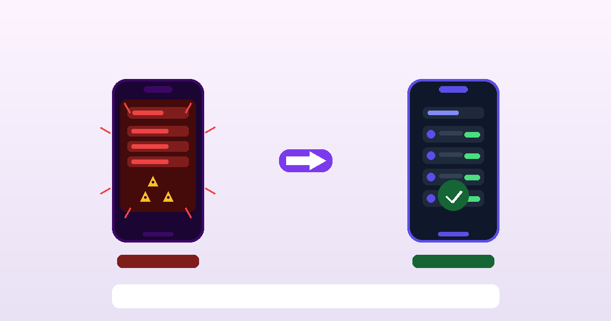

How to Check Your Bank Account Without Spiraling
Published: July 13, 2026 · 8 min read
Avoiding your bank account isn't a character flaw. It's a stress response. Your nervous system learned that opening that app leads to dread, so it's protecting you by keeping you away. The problem is that avoidance makes the dread grow, not shrink. Here's how to break that loop, gently.

TL;DR — the 5-step ritual at a glance
- Set the scene — check from somewhere calm, not in bed, not while rushed
- Give yourself a time limit — two minutes max, timer on
- Look at one number only — current balance, nothing else yet
- Name what you feel — one word, out loud or in writing, before reacting
- Close the app and log it — one check-in counts as a win, regardless of the number
Why your brain treats the banking app like a threat
The dread you feel before opening your banking app isn't irrational. It's a learned association. At some point, you opened it and the number was lower than you expected. Your nervous system registered that as a threat, paired the sensation of opening the app with the spike of cortisol that followed, and stored that pairing. Now, before you've even seen the balance, your body is already preparing to feel bad.
This is the same mechanism behind any anxiety avoidance loop. The thing being avoided (the app, the number, the inbox) isn't always dangerous. But the anticipatory dread is real, and avoidance brings temporary relief, which reinforces the pattern and makes the next check harder.
Research on financial anxiety identifies money avoidance as a distinct pattern: a set of beliefs and behaviors organized around staying away from financial information because engaging with it feels worse than not knowing. The irony is that not knowing almost always generates more anxiety in the background, not less.
The avoidance loop, explained simply
The way out of an avoidance loop is not to push through it with willpower. It's to reduce the size of the exposure gradually until the threat association weakens. That's the principle behind the ritual below: small, predictable, low-stakes repetitions that rebuild a neutral or even positive association with the act of checking.
Finiverse was built for this exact feeling.
No red numbers. No anxiety-triggering alerts. Just a calm, clean view of your money.
The ritual: step by step
This isn't a budgeting exercise. It's a nervous-system exercise. The goal for the first few weeks is not to get a clear financial picture. The goal is to check without spiraling. Clarity can come later, once the association with the app has shifted from threat to neutral.
Step 1: Set the scene deliberately
Don't check your balance the moment you wake up, during a stressful commute, or right before bed. Pick a time when you're relatively calm, have eaten, and are somewhere you feel safe. Sit down. Put a warm drink next to you if that helps. The physical context matters because your nervous system uses environmental cues to calibrate threat level. The same number feels different in a chair with tea than in bed at midnight.
Step 2: Set a two-minute timer before you open the app
Two minutes is enough to look at your balance and the last three to five transactions. That's it. A hard time limit does two things: it signals to your brain that this will end (the dread of “I don't know how long this will last” is often worse than the thing itself), and it prevents the spiral of clicking deeper and deeper into statements and past months when the anxiety rises.
Step 3: Look at one number only
Current balance. That's your only job right now. Not the credit card statement. Not what you spent last month. Not whether you're on track for any goal. Just the current balance. Read it. Let it land. Take a breath. If the number feels manageable, stay for the remaining time. If the number feels alarming, that's allowed, close the app when the timer goes, and come back tomorrow. One look, even a hard one, is a win.
Step 4: Name what you feel before you react
Before you close the app, say or write one word that describes what you feel. “Worried.” “Relieved.” “Numb.” “Surprised.” This sounds minor but it's meaningful: naming an emotion creates a small gap between the feeling and your response to it. That gap is where you have a choice. Without it, the feeling becomes an action automatically, and the action is usually to close the app fast and distract yourself.
Step 5: Log it and close, that's the win
The check-in itself is the accomplishment. Not the number. Not what you decide to do about it. Just the fact that you looked, without spiraling, is a repetition that weakens the threat association. Log the moment: in Finiverse, in a notes app, on paper, wherever. Over time you'll notice that the ritual gets easier. The dread comes later, sits lighter, and leaves faster. That's the loop breaking.
What to do when the number is actually bad
Sometimes the balance is genuinely low. The ritual isn't designed to make you feel fine about a difficult financial situation. It's designed to keep you in contact with reality so that a difficult situation stays manageable rather than becoming a catastrophe because you looked away too long.
If the number is bad, the only job for today is to have seen it. Tomorrow you can look at the last five transactions. The day after, you can look at what's coming out in the next week. Take it one look at a time. The anxious brain catastrophizes when it gets partial information and tries to fill in the rest. More looks, shorter visits, is better than one big overwhelming session.
Designed for sensitive brains
Finiverse shows your balance without the red alerts.
Calm colors. Emotion check-ins. No shame language. Built specifically for people who find standard finance apps triggering.
Download free on the App Store →And if you have a conversation ahead of you about your finances, whether with yourself, a partner, or an advisor, checking in daily for a week first is the best preparation. You'll walk in knowing the facts instead of bracing for something unknown.
Making it a habit: remove every barrier you can
The more steps between “I want to check” and actually checking, the more chances the anxiety has to talk you out of it. Move the banking app or Finiverse to your home screen. Set a daily reminder at the exact time you've decided is your check-in time. Have the calm drink already made. The ritual should require as little decision-making as possible in the moment, because decision-making is exactly what anxiety depletes.
Two minutes a day is enough to start. Most people who build this habit find that within three to four weeks the dread has meaningfully reduced. Not because their finances changed, because their relationship with the information did.
Sources
- Klontz, B., Britt, S. L., Mentzer, J., & Klontz, T. (2011). Money beliefs and financial behaviors: Development of the Klontz Money Script Inventory. Journal of Financial Therapy, 2(1).
- Clark, D. A., & Beck, A. T. (2010). Cognitive Therapy of Anxiety Disorders: Science and Practice. Guilford Press.
- Rick, S. I., Cryder, C. E., & Loewenstein, G. (2008). Tightwads and spendthrifts. Journal of Consumer Research, 34(6), 767–782.
A finance app that doesn't make you feel worse.
Calm interface, emotion check-ins, no red alerts. Finiverse was built for people who want to build a healthier relationship with money, not just track it.
Download Finiverse free →